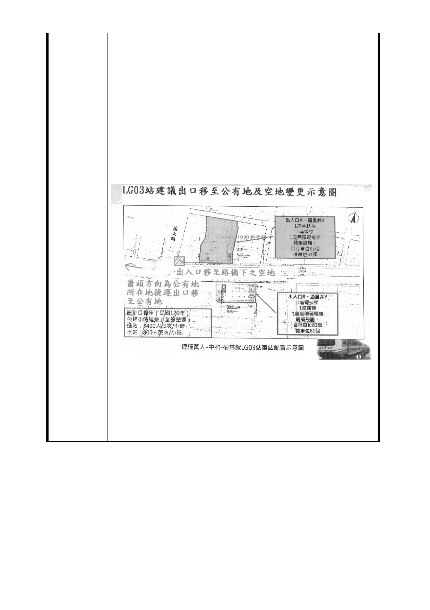

捷運萬大線 LG03 站西藏路北側捷五預定開發用地住戶土地
所有權人堅決反對土地徵收聯合陳情聲明書（與聯署表格）
反對聯合開發！反對強制徵收！
將捷運出入口移置公有地或人行道合併停車格，誓死捍衛家
園！
訴求一：強烈要求單純捷運出入口並將出入口移往公有
地或人行道合併停車格擴增人行道
訴求二：強烈要求單邊捷運出入口
訴求三：捷運局七年來未向住戶先行召開說明，擅自圖
上作業選定位置
訴求四：危險！LG03 捷五站聯合開發預設地旁緊臨著老
舊房舍居民生活權益安危誰顧？
聯合陳情訴求如下
訴求一：強烈要求單純捷運出入口並將出入口移往公有
地或人行道合併停車格擴增人行道
建議出入口地點
1.萬大路與西藏路十字路口之天橋下空地（此處為捷運局第
一次規劃之出入口）
- 94 -